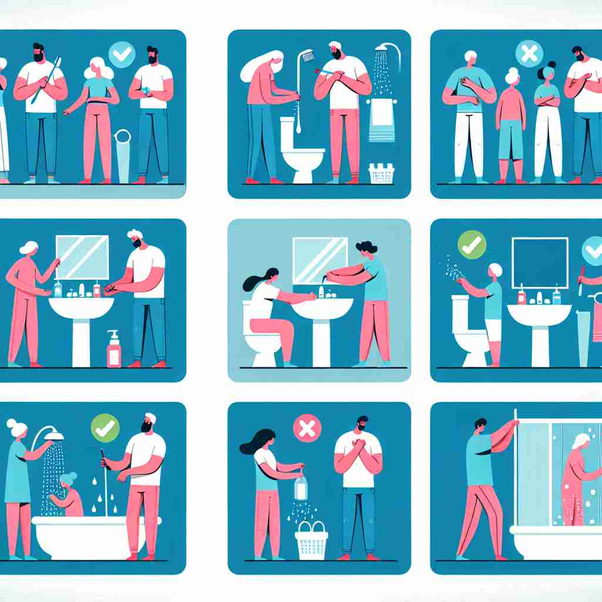

💬 The boy practices hand hygiene to stay healthy.

💬 It is important to maintain good hygiene to stay healthy.
🔈 ['haɪdʒiːn]
🗝️ n. the practice of keeping yourself and your surroundings clean, especially in order to prevent illness or the spread of diseases
🖼️ 想象一个忙碌的医院大厅，一位护士正在教导新员工们，如何在工作期间保持个人卫生。她展示了正确的洗手步骤，并强调在患者之间更换手套和消毒的重要性。这展示了 'hygiene' 作为保持个人和环境清洁以防止疾病传播的实践意义。
🔍 想象'hygiene'是一把清洁的扫帚，最初用于个人清洁，后来扩展到清扫整个健康领域。这把扫帚不仅清洁身体，还能清理环境，甚至能够清扫心灵。通过这个形象，你可以轻松记住'hygiene'从个人清洁延伸到公共卫生、健康实践，直至心理健康的多重含义。
💬 The boy practices hand hygiene to stay healthy.
💬 It is important to maintain good hygiene to stay healthy.
🌳 词根 'hygie-' 来源于希腊神话中的健康女神 Hygeia，加上名词后缀 '-ene'，表示 '卫生'。
💡 您可以联想希腊神话中健康女神 Hygeia，想到 'hygiene' 与 '健康' 和 '卫生' 的关系，帮助记忆其含义。
🗝️ n. the science that deals with the promotion and preservation of health
🖼️ 在大学的一个大讲堂里，一位教授正在给学生们讲授公共卫生课程。他详细解释了饮食、运动和心理健康之间的关系，以及它们如何一起促进整体健康。这个场景展示了 'hygiene' 作为促进和维护健康的科学。
💬 She's studying hygiene and public health at university.
❓ 从个人清洁扩展到整个健康科学
🗝️ n. conditions or practices conducive to maintaining health and preventing disease, especially through cleanliness
🖼️ 在一个繁忙的餐厅厨房中，厨师们有条不紊地切菜和烹饪。他们在操作台上定期清理工具，并且在处理生肉和蔬菜时使用不同的切板。这体现了 'hygiene' 作为保持健康和防止疾病传播的各种有利条件和实践。
💬 The restaurant was closed due to poor hygiene standards.
❓ 从个人清洁扩展到更广泛的健康实践
🗝️ n. mental health or well-being
🖼️ 在一个舒适的心理咨询室里，咨询师和来访者坐在一起，讨论如何通过日常的冥想和自我关怀习惯来改善心理健康。这个场景展示了 'hygiene' 作为心理健康或幸福感的含义。
💬 Practices that promote mental hygiene include regular exercise and meditation.
❓ 从身体清洁扩展到心理健康